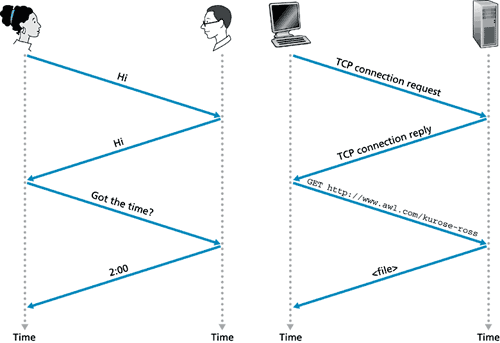
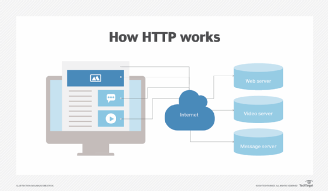
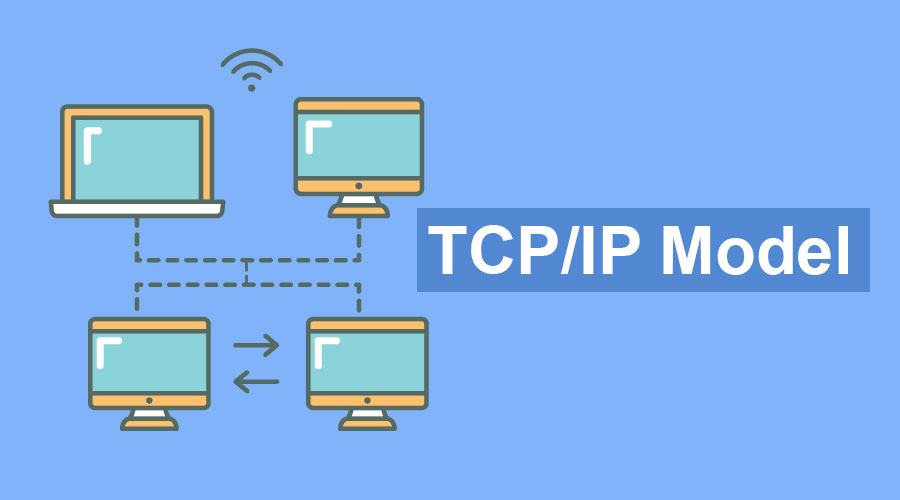
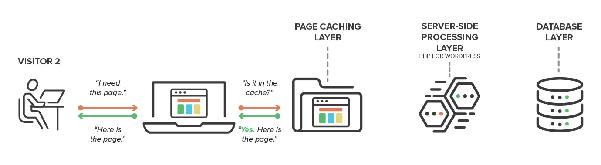
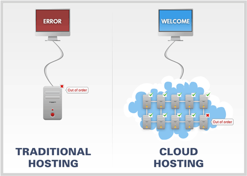
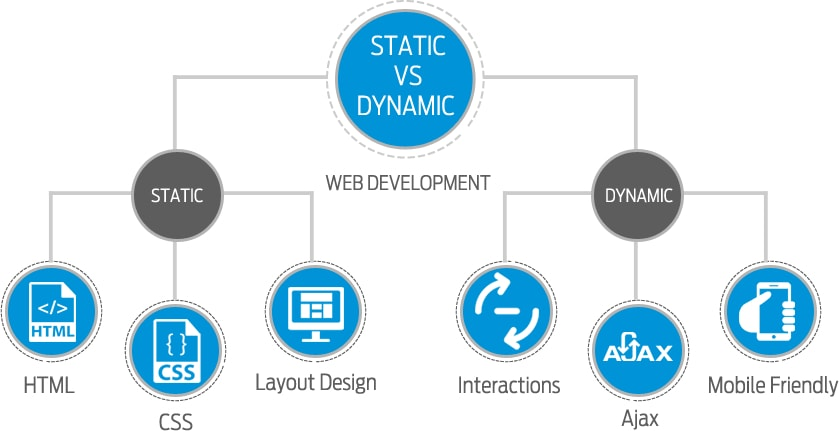

Networking and Internet Basics
Technical article, Module 4
Internet Arcitecture
Protocol
Protocol is a set of rules that defines how data is exhanged within or between computers.
These rules include what what data may be transmitted, the commands used to send and recieve that data and how the transfers are confirmed. Protocol is sometimes compaired to the spoken language.
Image source
HTTP
Stands for Hypertext Transfer Protocol and defines a language for clients and servers to speak to commuticate. It is an application for transmitting hypermedia documents like HTML.
HTTPS
The S stands for Secure and it protects the integrity and confidentiality of data between the user and the website.
Image source
DNS
Stands for Domain Name System and connects URLs with their IP address. IP adresses are a string of numbers and DNS makes it capable to type words instead.
Image source
TCP/IP
Stands for Transmission Control Protocol / Internet Protocol. It is a standard set of rules that allow computers to communicate on the internet through compiling packets of data and sending them to the right location.
Image source
Web Server
The web server is a software witch objective is to store, process and deliver web pages to the user. It processes the incoming network request over HTTP and other related protocols.

Image source
{kind=link}
Web Servers
Cache
Cache is the process of storing a copy of a given resource data and sending it back when requested. Caching reduces latency and network traffic. By reusing previously fetched features the performance and responsiveness of web application can be improved.
Image source
{kind=link}
Web hosting and Cloud Computing
Traditional Web hosting is either shared or dediated. With dedicated hosting the client pays for all the resources of one or more servers from the provider. With shared hosting the client pays for a set amount of storage on a single server that is shared with other websites.
Cloud computing has more scalability where the client pays only for the storage that is used. Cloud hosting balances the load across multiple mirrored servers and is therefore more secure if one server goes down.
Image source
{kind=link}
Static and Dynamic pages
Static pages are written with languages like HTML, Javascript, CSS and it is hardcoded on a page. Static page data does not change until someone does so manually. They show the same content for every user.
Dynamic pages are structured by referencing some external database like CGI, AJAX, ASP. Dynamic website can display different content and provide user interacion.
Image source
{kind=link}